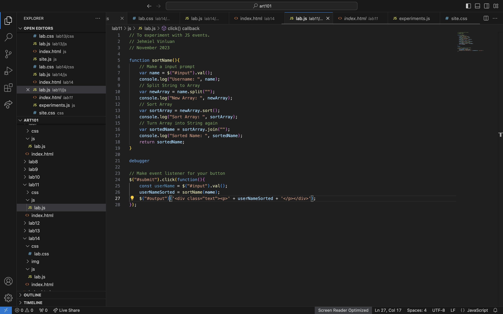
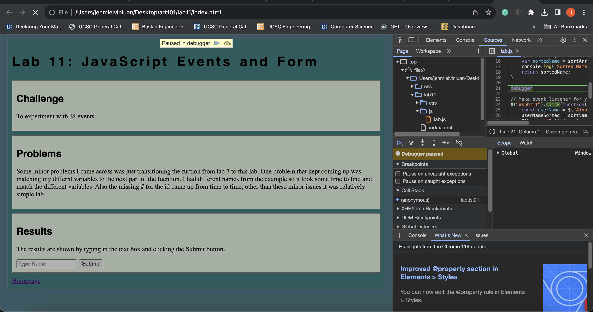

Lab 14: Debugging Tools & Strategies
Challenge
To use your debugging knowledge to fix old assignments
Problems
So when it came to this lab we looked through all of our past labs and there weren't any major issues so we went back to a few of he labs and added a debugger to make breakpoints. The screenshots shown below is a experiment of the use debugger. I put debugger in my lab 11 js file and removed .html on the last part of the event listener which resulted in the program pausing.
Results
Results Below

